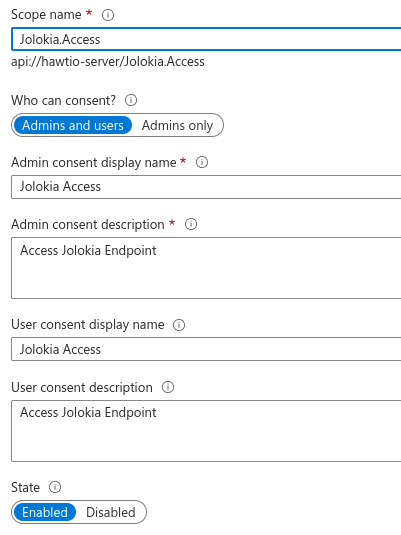
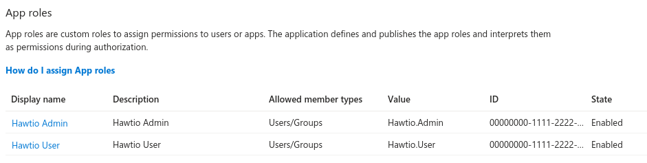
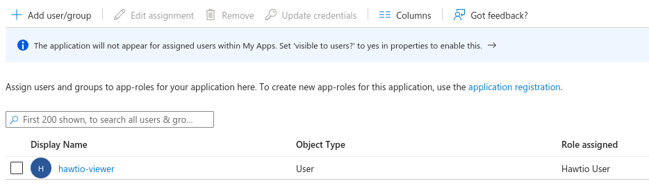
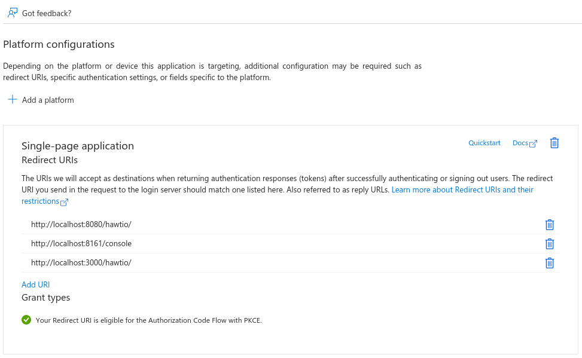
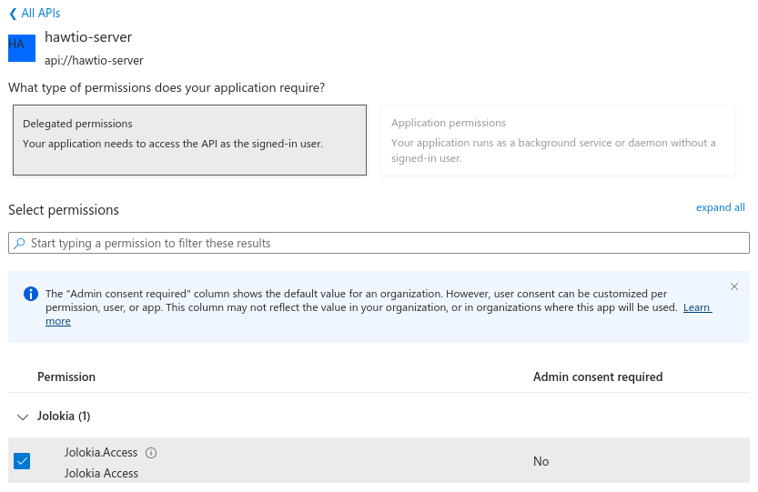
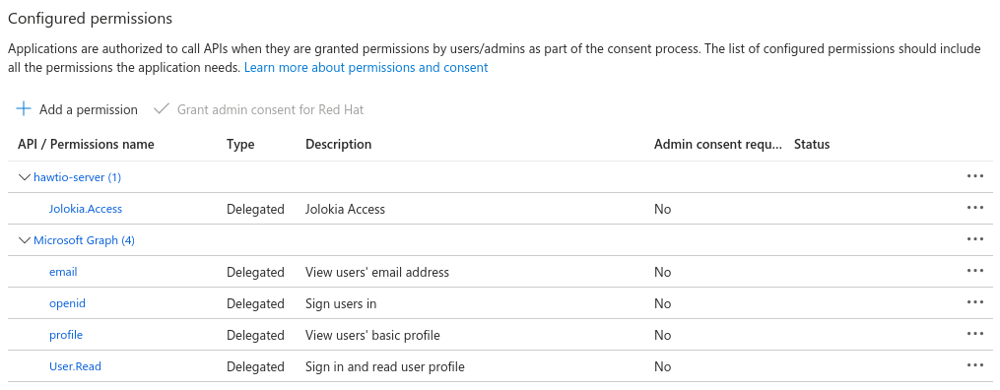

OpenID Connect Integration
Hawtio is already supporting Keycloak as OpenID Provider. However, Keycloak already announced that the configuration methods used by Hawtio are deprecated.
Because OpenID Connect Core 1.0 is a widespread specification and standard method for distributed authentication (based on OAuth 2), Hawtio 4 now supports generic OpenID authentication.
Building blocks and terminology
To understand how Hawtio uses OpenID Connect and OAuth2, it’s worth recalling some fundamental concepts.
There are 3 main parties involved in distributed authentication based on OpenID Connect (which is build on OAuth2):
- Resource Server
-
The server component hosting protected resource(s), where access is restricted or granted based on access tokens. Usually this server is accessed through REST API and doesn’t provide user interface on its own.
- Client
-
The application (typically with user interface) that accesses resource server on behalf of a user (which is treated as resource owner). In order to access resource server it is mandatory for the client to obtain an access token first.
In OpenID Connect specification, the client is named relying party (RP).
- Authorization Server
-
The server that coordinates communication between a client and resource server. The client asks authorization server to authenticate the user (resource owner) and if the authentication succeeds, an access token is issued for the client to access resource server.
In OpenID Connect specification, the authorization server is named OpenID Provider (OP).
The main goal of OAuth2 and OpenID Connect it to allow applications to access APIs without using user credentials and switch to token exchange.
It is important to know how Hawtio maps to the above roles:
-
Hawtio Client application is an OAuth2 client. User interacts with Hawtio web application which in turn communicates with Hawtio Server (backend) with Jolokia agent running. Before accessing the Jolokia agent, Hawtio needs an OpenID Connect access token. To this end, Hawtio Client initiates OpenID Connect authentication process by redirecting user to Authorization Server.
-
Hawtio Server application is a JakartaEE application exposing a Jolokia Agent API which authorizes user actions based on the content of an access token. Using OAuth2 terminology, Hawtio Server is a Resource Server.
The below UML diagram present the big picture.
The most important aspect is: Hawtio Client never deals with user credentials. User authenticates with Authorization Server and Hawtio Client only gets the access token used later to access Hawtio Server (and its Jolokia API).
Generic OpenID Connect authentication in Hawtio
Hawtio 4 can be used with existing OpenID Connect providers (like Keycloak, Microsoft Entra ID, Auth0, …) and uses these libraries to fullfill the task:
-
Apache HTTP Client 4 to implement HTTP communication from Hawtio Server to OpenID Connect provider (e.g., to retrieve information about public keys for token signature validation).
-
Nimbus JOSE + JWT library to manipulate and validate OpenID Connect / OAuth2 access tokens.
These libraries are included in Hawtio Server WAR, which means there’s no need to install/deploy any additional libraries (as it is the case with Keycloak specific configuration).
In order to configure Hawtio with external OpenID Connect provider, we need to provide one configuration file and point Hawtio to its location.
The system property that specifies the location of OIDC (OpenID Connect) configuration is -Dhawtio.oidcConfig, but in case it’s not specified, a default location is checked. The defaults are:
-
For Karaf runtime,
${karaf.base}/etc/hawtio-oidc.properties -
For Jetty runtime,
${jetty.home}/etc/hawtio-oidc.properties -
For Tomcat runtime,
${catalina.home}/conf/hawtio-oidc.properties -
For JBoss/EAP/Wildfly runtime,
${jboss.server.config.dir}/hawtio-oidc.properties -
For Apache Artemis runtime,
${artemis.instance.etc}/hawtio-oidc.properties -
Falls back to
classpath:hawtio-oidc.properties(for embedded Hawtio usage)
Unlike with Keycloak specific configuration, there’s only one *.properties file needed that is used to configure all the aspects of OpenID Connect configuration. Here’s the template:
# OpenID Connect configuration requred at client side
# URL of OpenID Connect Provider - the URL after which ".well-known/openid-configuration" can be appended for
# discovery purposes
provider = http://localhost:18080/realms/hawtio-demo
# OpenID client identifier
client_id = hawtio-client
# response mode according to https://openid.net/specs/oauth-v2-multiple-response-types-1_0.html
response_mode = fragment
# scope to request when performing OpenID authentication. MUST include "openid" and required permissions
scope = openid email profile
# redirect URI after OpenID authentication - must also be configured at provider side
redirect_uri = http://localhost:8080/hawtio
# challenge method according to https://datatracker.ietf.org/doc/html/rfc7636
code_challenge_method = S256
# prompt hint according to https://openid.net/specs/openid-connect-core-1_0.html#AuthRequest
prompt = login
# additional configuration for the server side
# if true, .well-known/openid-configuration will be fetched at server side. This is required
# for proper JWT access token validation
oidc.cacheConfig = true
# time in minutes to cache public keys from jwks_uri
jwks.cacheTime = 60
# a path for an array of roles found in JWT payload. Property placeholders can be used for parameterized parts
# of the path (like for Keycloak) - but only for properties from this particular file
# example for properly configured Entra ID token
#oidc.rolesPath = roles
# example for Keycloak with use-resource-role-mappings=true
#oidc.rolesPath = resource_access.${client_id}.roles
# example for Keycloak with use-resource-role-mappings=false
oidc.rolesPath = realm_access.roles
# properties for role mapping. Each property with "roleMapping." prefix is used to map an original role
# from JWT token (found at ${oidc.rolesPath}) to a role used by the application
roleMapping.admin = admin
roleMapping.user = user
roleMapping.viewer = viewer
roleMapping.manager = manager
# timeout for connection establishment (milliseconds)
http.connectionTimeout = 5000
# timeout for reading from established connection (milliseconds)
http.readTimeout = 10000
# HTTP proxy to use when connecting to OpenID Connect provider
#http.proxyURL = http://127.0.0.1:3128
# TLS configuration (system properties can be used, e.g., "${catalina.home}/conf/hawtio.jks")
#ssl.protocol = TLSv1.3
#ssl.truststore = src/test/resources/hawtio.jks
#ssl.truststorePassword = hawtio
#ssl.keystore = src/test/resources/hawtio.jks
#ssl.keystorePassword = hawtio
#ssl.keyAlias = openid connect test provider
#ssl.keyPassword = hawtioThis file configures several aspects of Hawtio+OpenID Connect:
-
OAuth2 - configure the location of Authorization Server, client ID and several OpenID Connect related options
-
JWKS - cache time for public keys obtained from
jwks_uri, which is the endpoint that exposes public keys used by the Authorization Server. -
JWT token configuration - information about the claim (a field in JSON Web Token) that contains roles associated with the authenticated user. We also allow to map roles as defined in the Authorization Server to the roles used by the application (Hawtio Server and Jolokia).
-
HTTP configuration - used by HTTP Client at server-side to connect to Authorization Server (to fetch OpenID Connect metadata and exposed public keys).
This example configuration can be adjusted to particular needs, but it also works as-is when used with containerized Keycloak. (See below).
JAAS role class configuration
OpenID Connect is used at Hawtio server side through JAAS. When Hawtio client obtains the access token, it is sent with every Jolokia request using HTTP Authorization: Bearer <access_token> header. Each role contained in the JWT token is (possibly after mapping) included as JAAS subject’s role principal. By default (when not configured explicitly) the class of role principal is io.hawt.web.auth.oidc.RolePrincipal. However it is possible to configure another class (the requirement is - it has to contain single String-argument constructor) to be used as principal role class. For example, when used with Apache Artemis, the role should be org.apache.activemq.artemis.spi.core.security.jaas.RolePrincipal.
There’s a system property that specifies the role class:
-Dhawtio.rolePrincipalClasses=org.apache.activemq.artemis.spi.core.security.jaas.RolePrincipal
Using Hawtio and OpenID Connect authentication with Keycloak
The simplest way to run Keycloak instance is using a container:
podman run -d --name keycloak \
-p 18080:8080 \
-e KEYCLOAK_ADMIN=admin \
-e KEYCLOAK_ADMIN_PASSWORD=admin \
quay.io/keycloak/keycloak:latest start-devAfter it’s started, browse to http://localhost:18080/admin/master/console/ and create a new realm:
At realm creation screen, upload hawtio-demo-realm.json which defines new hawtio-demo realm with pre-configured hawtio-client client and 3 users:
-
admin/admin with roles
manager,admin,vieweranduser -
viewer/viewer with roles
vieweranduser -
jdoe/jdoe with just
userrole
Investigating JWT token issues
In order to check the content of granted access token, we can use Keycloak interface. Navigate to "Clients", select "hawtio-client" and use "Client scopes" tab with "Evaluate" subtab:
Then in the "Users" field we can select for example "admin" and click "Generated access token". We can then examine an example token:
{
"exp": 1709552728,
"iat": 1709552428,
"jti": "0f33971f-c4f7-4a5c-a240-c18ba3f97aa1",
"iss": "http://localhost:18080/realms/hawtio-demo",
"aud": "account",
"sub": "84d156fa-e4cc-4785-91c1-4e0bda4b8ed9",
"typ": "Bearer",
"azp": "hawtio-client",
"session_state": "181a30ac-fce1-4f4f-aaee-110304ccb0e6",
"acr": "1",
"allowed-origins": [
"http://0.0.0.0:8181",
"http://localhost:8080",
"http://localhost:8181",
"http://0.0.0.0:10001",
"http://0.0.0.0:8080",
"http://localhost:10001",
"http://localhost:10000",
"http://0.0.0.0:10000"
],
"realm_access": {
"roles": [
"viewer",
"manager",
"admin",
"user"
]
},
"resource_access": {
"account": {
"roles": [
"manage-account",
"manage-account-links",
"view-profile"
]
}
},
"scope": "openid profile email",
"sid": "181a30ac-fce1-4f4f-aaee-110304ccb0e6",
"email_verified": false,
"name": "Admin Hawtio",
"preferred_username": "admin",
"given_name": "Admin",
"family_name": "Hawtio",
"email": "admin@hawt.io"
}Knowing the structure of JWT access token we can check if role path is configured correctly:
# example for Keycloak with use-resource-role-mappings=false oidc.rolesPath = realm_access.roles
Using Hawtio and OpenID Connect authentication with Microsoft Entra ID
Hawtio 4 has also been tested with Microsoft Entra ID.
While in theory, everything that should be required to use any OpenID Connect provider is to get access to relevant OpenID Provider Metadata, in practice we need some provider-specific configuration.
Clients are registered in Entra ID using "App registrations" blade. When registering an application, the most important decision is about a platform kind of the Redirect URI:
There are 2 options to choose from (we’re not considering "Public client/native (mobile & desktop)" platform). This UI is presented when configuring Redirect URIs later:
While it’s not obvious what to choose at first glance, it is enough to state:
- Web platform
-
This kind of client is suitable for server-side applications and APIs.
- SPA platform
-
SPA applications are running within a browser where it’s natural to use "Authorization Code Flow" and so-called public client. The reason is that there’s no good way of storing credentials and secrets in browser application.
Choosing SPA platform gives us this mark in Entra ID UI:
Using single SPA client in Entra ID
After configuring the SPA client in Entra ID, we can already set relevant options in hawtio-oidc.properties. At "App registrations" blade in Entra ID we can click "Endpoints" tab and be presented with:
Tenant IDs are UUIDs specific to the Entra ID / Azure tenant being used.
Here’s the Hawtio configuration where provider is the base URL of your tenant and client_id is "Application (client) ID" from the Overview of App Registration page.
# OpenID Connect configuration requred at client side # URL of OpenID Connect Provider - the URL after which ".well-known/openid-configuration" can be appended for # discovery purposes provider = https://login.microsoftonline.com/00000000-1111-2222-3333-444444444444/v2.0 # OpenID client identifier client_id = 55555555-6666-7777-8888-999999999999 # response mode according to https://openid.net/specs/oauth-v2-multiple-response-types-1_0.html response_mode = fragment # scope to request when performing OpenID authentication. MUST include "openid" and required permissions scope = openid email profile # redirect URI after OpenID authentication - must also be configured at provider side redirect_uri = http://localhost:8080/hawtio # challenge method according to https://datatracker.ietf.org/doc/html/rfc7636 code_challenge_method = S256 # prompt hint according to https://openid.net/specs/openid-connect-core-1_0.html#AuthRequest prompt = login
The problem with such configuration (where openid email profile is sent as a scope parameter) is that the assumed scope is in fact email openid profile User.Read and the granted access token is (showing only relevant JWT claims):
{
"aud": "00000003-0000-0000-c000-000000000000",
"iss": "https://sts.windows.net/8fd8ed3d-c739-410f-83ab-ac2228fa6bbf/",
...
"app_displayname": "hawtio",
...
"scp": "email openid profile User.Read",
...
}The aud (audience) claim is 00000003-0000-0000-c000-000000000000 which is an OAuth2 Client ID of … Microsoft Graph API.
Not only such access token shouldn’t be used by Hawtio server (with Jolokia agent), also the signature is created using keys associated with Microsoft Graph API.
In order to properly configure Entra ID and ensure that the access tokens generated are consumable by Hawtio Server, we need two app registrations - both for Hawtio Client and Hawtio Server. See the following subchapter.
Using SPA together with Web client in Entra ID
What is recommended is to set up two app registrations in Entra ID:
-
An SPA client for Hawtio Client application - this is the way to configure an OAuth2 public client with PKCE enabled.
-
A Web (API) client for Hawtio Server application (in fact, its Jolokia API) - this is the Entra ID which exposes an API represented as scope named (for example)
api://hawtio-server/Jolokia.Access, which is then configured in the above Hawtio Client application as permitted API.
Finally, when the Authorization Code Flow is initiated one of the requested scopes in the scope parameter is the scope defined for Hawtio Server application (like api://hawtio-server/Jolokia.Access).
Let’s summarize the configuration required in Entra ID.
-
Create
hawtio-serverapp registration with "Web" Redirect URI -
In "Expose an API" section, add a scope representing the access scope that may be requested from Hawtio Client:
This will create a reference’able
api://hawtio-server/Jolokia.Accessscope we will use later. -
In "App roles" section for
hawtio-serverdefine any roles you want to assign to users within the scope of this client, for example: -
In "Enterprise Applications" blade for
hawtio-servergo to "Users and groups" tab and add user-role assignment. For example: -
Create
hawtio-clientapp registration with "SPA" Redirect URI -
In "API Permissions" section for
hawtio-clientapp registration, add a delegated permission forhawtio-serverexposed API:This should configure a set of delegated permissions similar to:
Read more about delegated permissions in Microsoft Entra ID documentation. -
No User-Role mapping is required for
hawtio-clientin Enterprise Application blade.
Having the above configured, we can properly set the scope parameter in Hawtio configuration:
# scope to request when performing OpenID authentication. MUST include "openid" and required permissions scope = openid email profile api://hawtio-server/Jolokia.Access
Access token configuration
The final, but very important configuration item is the Token Configuration. For hawtio-server app registration, which is the app that represents Hawtio Server (and is the component that consumes granted access token) we have to ensure that groups claim is added to access token.
Here’s the minimal configuration:
groups claim need to include security groups and directory roles and groups needs to be represented by names, not UUIDs:
For reference, here’s the relevant JSON snippet of hawtio-server app registration’s Manifest:
"optionalClaims": {
"idToken": [
{
"name": "groups",
"source": null,
"essential": false,
"additionalProperties": []
}
],
"accessToken": [
{
"name": "groups",
"source": null,
"essential": false,
"additionalProperties": [
"sam_account_name"
]
},
...Now the granted access token is no longer specific for Microsft Graph API audience. It is intended for hawtio-server - aud claim is the UUID of hawtio-server app registration and appid claim is the UUID of hawtio-client app registration:
{
"aud": "aaaaaaaa-bbbb-cccc-dddd-eeeeeeeeeeee",
"iss": "https://sts.windows.net/.../",
"iat": 1709626257,
"nbf": 1709626257,
"exp": 1709630939,
...
"appid": "55555555-6666-7777-8888-999999999999",
...
"groups": [
...
],
...
"name": "hawtio-viewer",
...
"roles": [
"Hawtio.User"
],
"scp": "Jolokia.Access",The roles which are then transformed (possibly with mapping) are available at roles claim and this is reflected in the configuration:
# a path for an array of roles found in JWT payload. Property placeholders can be used for parameterized parts
# of the path (like for Keycloak) - but only for properties from this particular file
# example for properly configured Entra ID token
#oidc.rolesPath = roles
...
# properties for role mapping. Each property with "roleMapping." prefix is used to map an original role
# from JWT token (found at ${oidc.rolesPath}) to a role used by the application
roleMapping.Hawtio.User = user
...